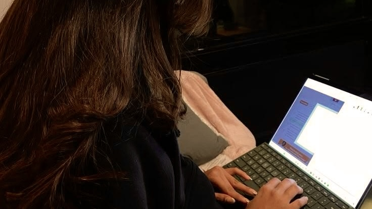
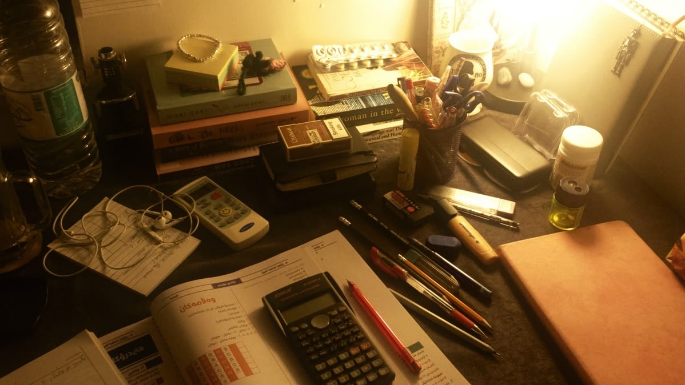
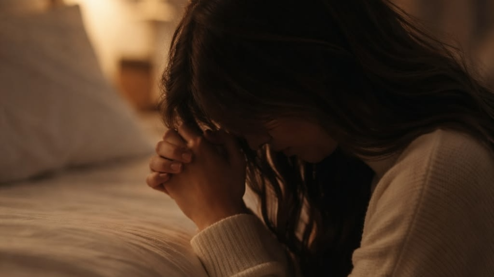

ORIGINAL MULTIMODAL ONE-ACT PLAY
When the Young Speaks
An Original Multimodal One-Act Play
Characters
[The curtain rises, showing a cultured Filipino living room in the late evening. A loud television glowing at one side of the stage with a news anchor reporting about the approaching presidential elections. At the dinner table, while Amethyst works on her homework, she glances at the TV.]
[LX Q1: Soft, warm, and golden ambient, like sunlight seeping through the windows.]
TIMOTHY JAMES: As the presidential elections are coming up, two main candidates stand out: Chris Daniel Batumbakal, from a well-known family, and Althea April Bautista, a former public official who is known for her previous services in the city she served.
MARIA CHRISTINA: [She faces LUCAS BENJAMIN] I already know who I'm voting for; at this point, it's plainly obvious.
LUCAS BENJAMIN: Batumbakal?
MARIA CHRISTINA: [Smiling] Of course, who else? His family has been in politics ever since. Plus, I don't even know who Bautista is; hardly anyone even knows her name.
[AMETHYST MAE drops her pen, looking up from her notebook as she quietly listens in to the ongoing conversation, wanting to interrupt.]
AMETHYST MAE: [looking at MARIA CHRISTINA] Did you even research each candidate before deciding on who to vote for?
LUCAS BENJAMIN: Why is there a need to? We don't need to know every little thing about a candidate to know they're the better choice.
AMETHYST MAE: But you know, my teacher informed us that it’s important to know a candidate's strengths, weaknesses, and credentials to know they're worthy enough to take care of us citizens!
MARIA CHRISTINA: Amethyst, just because your teacher taught you about politics doesn't mean you know everything about it. You're still a child; you don't know anything yet.
LUCAS BENJAMIN: Your mother’s right, Amethyst. We're adults; we know what we're doing, and we know that Batumbakal is popular and comes from a respected family; therefore, a better candidate.
[LUCAS BENJAMIN leans back confidently, AMETHYST MAE looks at him, unconvinced.]
AMETHYST MAE: So what if he's popular and comes from a respected family? It doesn't mean anything. What about his past projects, services, and credentials?
[LX Q2: Room gets dimmer, and harsh fierce lighting fades in.]
MARIA CHRISTINA: [Yelling, annoyed] That’s enough out of you, Amethyst! You’ve been talking like you know everything around you. You need to stop talking back to your parents and go back to your room!
[LX Q3: Soft glowy spotlight on AMETHYST MAE, with dark room lighting in back.]
[AMETHYST MAE gets up from her chair and storms back to her room upstairs. She then turns on her laptop to do research on both candidates.]

AMETHYST MAE: Chris Daniel Batumbakal… [She switches from one article to another] Influential family, huge following, overwhelming support…
[AMETHYST MAE scrolls further down, digging deeper into information about CHRIS DANIEL and his doings, only finding details and data about his influential family—not finding a single thing about what he has done for the city. She then decides to open articles about the second candidate, ALTHEA APRIL.]
AMETHYST MAE: Althea April Bautista, former mayor, community projects, years of public service…
[AMETHYST MAE scrolls further down, scanning each article with precise attention, finding every single good deed she has done previously for the city, seeing all the care she gives to her citizens and how transparent she is with the public.]

AMETHYST MAE: She’s done all of this, yet no one talks nor acknowledges it? Maybe people just don’t know yet; I should tell my parents.
[AMETHYST MAE leaves her laptop on with a determined look, ready to tell her parents what she found on the internet. She then runs down the stairs, excited to change her parents’ minds.]
[LX Q4: Soft, ambient light fades in.]
AMETHYST MAE: Mom! Did you know Althea April-
MARIA CHRISTINA: [Interrupting] Don’t tell me you’re talking about politics again; I already told you to leave it up to the adults. It’s not your problem to handle, Amethyst.
[LX Q5: Soft, ambient light turns harsher and intense.]
AMETHYST MAE: [Desperate] But I just wanted to show you the information I've found about the two candidates? Althea April has years of experience and–
LUCAS BENJAMIN: [Takes her arm] Enough! Amethyst Mae Lozano, you are too young to be indulged in politics; you’ll understand when you’re older.
AMETHYST MAE: [Angry, fed up] And why, huh? Just because I’m a child under your “supervision”, and your “roof”, means that I don’t have a right to just simply remind you and Mom to choose what’s best for our country? Really, Dad? I can’t even face you right now.
LUCAS BENJAMIN: Amethyst, can't you see? We’re just trying to protect you. What we're doing is what’s best for you.
[AMETHYST MAE exits in frustration and turns to go to her bedroom, feeling her voice is unheard in her own household, not understanding why her parents don’t want what's best for the country like she does. She locks herself in her bedroom, looking at the bible on her shelf, deciding to kneel down and pray to the Lord about what happened.]
[LX Q6: Spotlight on AMETHYST MAE, shadowy dim room.]

AMETHYST MAE: [Sad, lost for words] Dear God, it’s me again. Lord, why is it like this? Why can’t they just open their eyes, and just for once… accept the truth. Should it always be like this? Feeling unworthy and unseen? I just know I could stop this from happening, you know, God. I always do.
[AMETHYST MAE sees her laptop within her field of vision, its bright screen staring right at her—as if a sign to take action. She gets up and settles into her chair, opening social media—her fingers clicking against her keyboard, creating a post.]
[LX Q7: Stark, clear, and glowy.]
AMETHYST MAE: [Confident, stepping up] Before you vote for a candidate, take a moment to learn about them—their credentials, experience, not only by their name… but their work. I'm not telling you who to choose, but I'm telling you to make an informed decision.
[AMETHYST MAE hesitates to post it online, but as she stares at what she wrote, slowly gaining courage—carefully pressing the post button. She looks at her screen, then a notification pops up. And another, and then a million more, flooding her notifications. Different comments, likes on her post, people thanking her for spreading awareness.]
AMETHYST MAE: [grinning ear to ear] My age may keep me from casting a vote, but it won't keep me silent.